Zine Crew
Meet the Editors
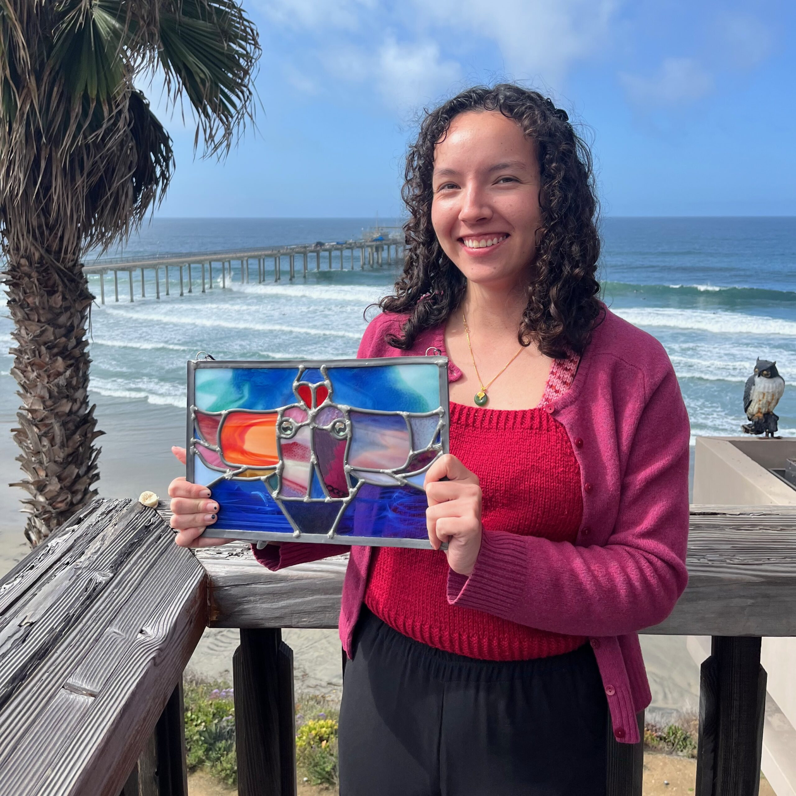
Theodora Mautz
Editor in Chief
Theodora is a third year Marine Biology PhD student in the Semmens Lab at Scripps. Aside from the squid she studies (and other cephalopods), Theodora loves making classical music, creative writing, knitting, and stained glass, and is trying to get better at digital art.

Océane Boulais
Digizine and Design Co-Editor
Engineer, tinkerer, sound artist and SIO Ph.D. candidate, Oc trades time for money teaching machines to eavesdrop on coral reefs and decode underwater symphonies for restoration. When not submerged in data or actual seawater, Oc loves improvising sonic experiments on vocals, flute, and anything percussive. As a science communicator, they are obsessed with translating the ocean's stories into experiences one can feel deep in the bones.
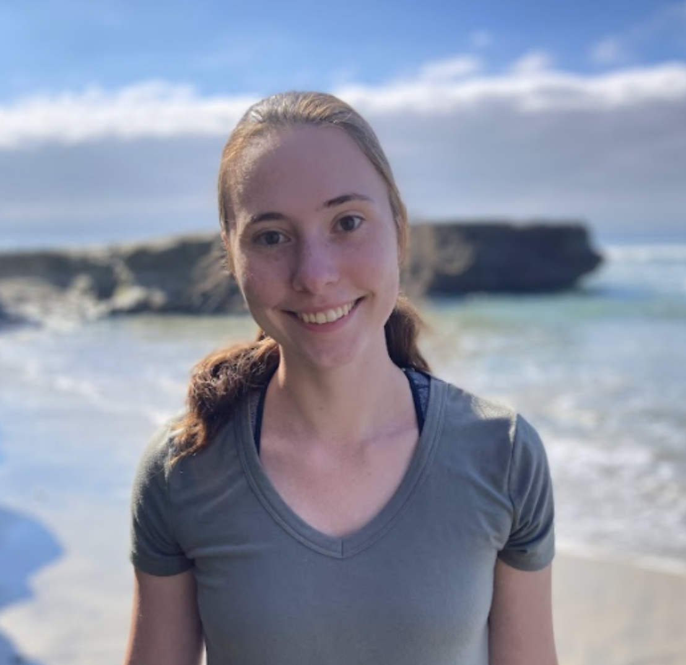
Mariah Avila
Co-Editor
Mariah is a PhD student in the Bradley Moore Lab studying marine natural products and synthetic biology. She is originally from Alaska and misses cozying up under a blanket with a cup of tea on a winter day. She loves fiber crafts (spinning, knitting), woodworking, and ceramics.
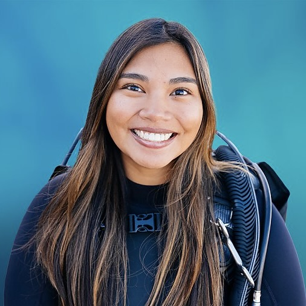
Ahmi Cacapit
Social Media and Outreach Editor
Ahmi is a PhD candidate in the Sandin Lab. She studies coral reef population dynamics using large-area photogrammetry. Whether in the field or on land, you can find her with her film camera on-hand or painting a fish she saw underwater.
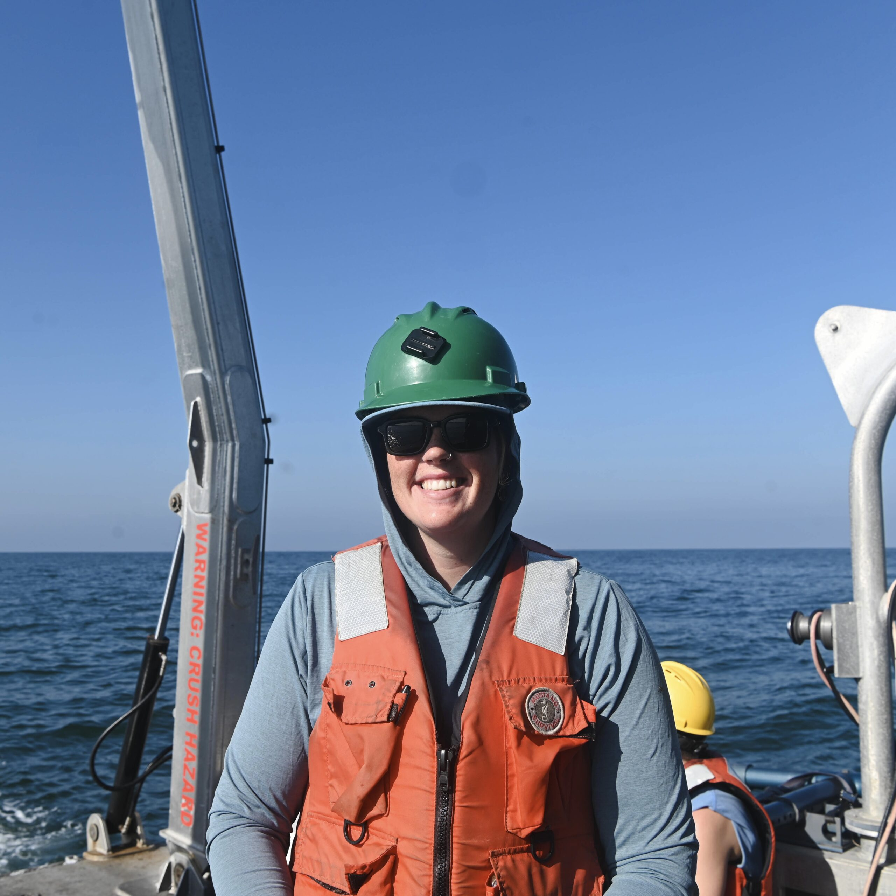
Aurora Czajkowski
Visual Design and Publishing Editor
Aurora is an interdisciplinary coastal chemical oceanographer, focused on understanding how freshwater plumes mix and transport in the coastal ocean through analytical and observational techniques. When not in the lab or at sea for research, she spends her time racing sailboats, teaching ceramics, writing, and surfing as much as humanly possible.
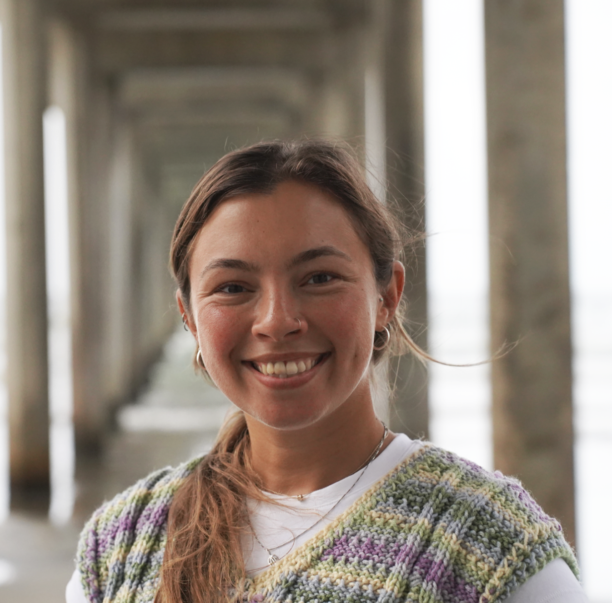
Rimma Levina
Design Co-Editor
Rimma is a postdoctoral researcher at SIO in the Hamdoun Lab. When she is not playing with glowing sea urchins at work, Rimma loves making colorful paintings and sculptures, taking film photos of everything she sees, cooking up huge meals with friends, and most importantly, surfing her brains out.
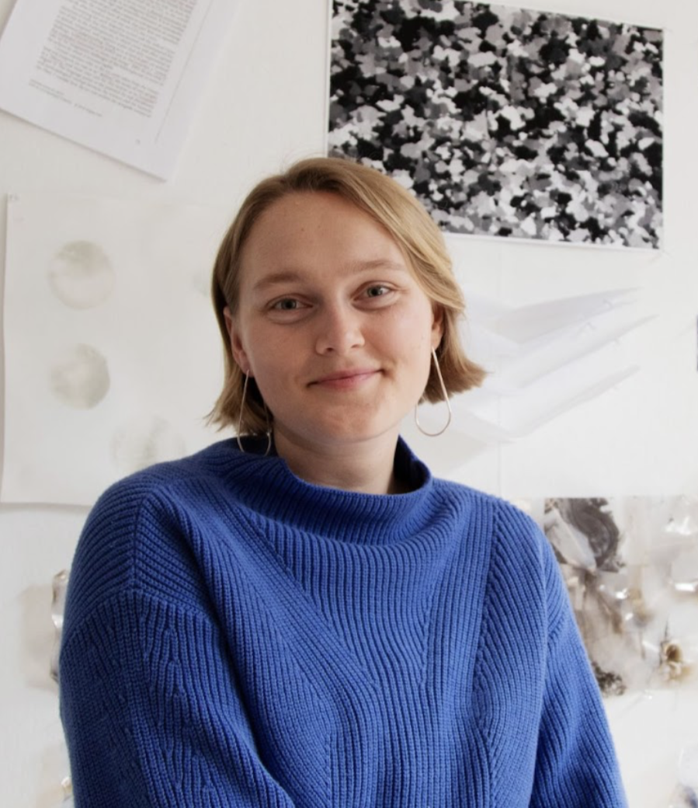
Sarah Rose
Design Co-Editor
Sarah is a PhD student in Visual Arts and the Program for Interdisciplinary Environmental Research (PIER) at the Center for Marine Biodiversity and Conservation at Scripps.
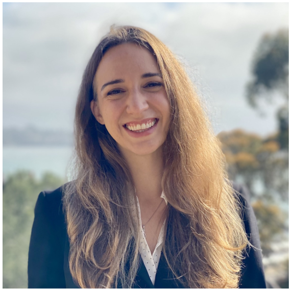
Annika Vawter
Design Co-Editor and Artist Coordinator
Annika is a staff research associate at SIO with roles in data and geospatial analysis and project coordination for coastal flood modeling and climate-based research. She also serves as a consultant for the Keeling Curve Foundation supporting long-term environmental observations. When off duty, she can be found on and in the water, learning new skills (most recently, glassblowing), singing, reading, and walking outdoors observing nature.
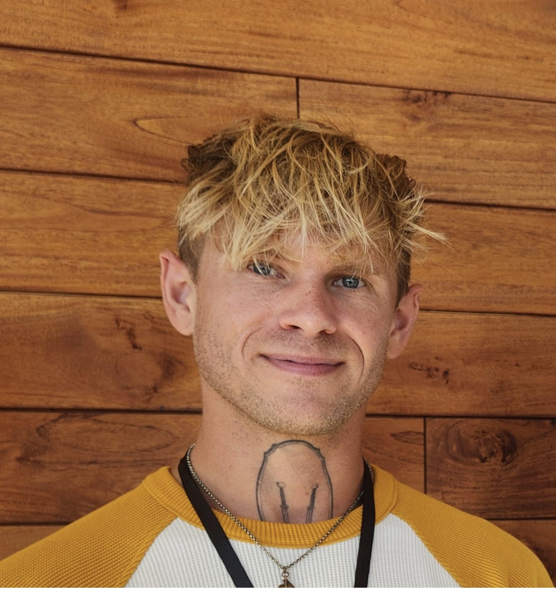
Ethan Staats
Finance Co-Editor, Design Co-Editor
Ethan's interests center on wild nature, cameras, exploration, movement, and play. They are a 5th year Marine Biology PhD Candidate in the Deheyn Lab at SIO studying the in-vivo roles of native Fluorescent Proteins. Catch them in the talus slides and piles of the North-American West, in the waves at SIO, or in a book or CA naturalism project.
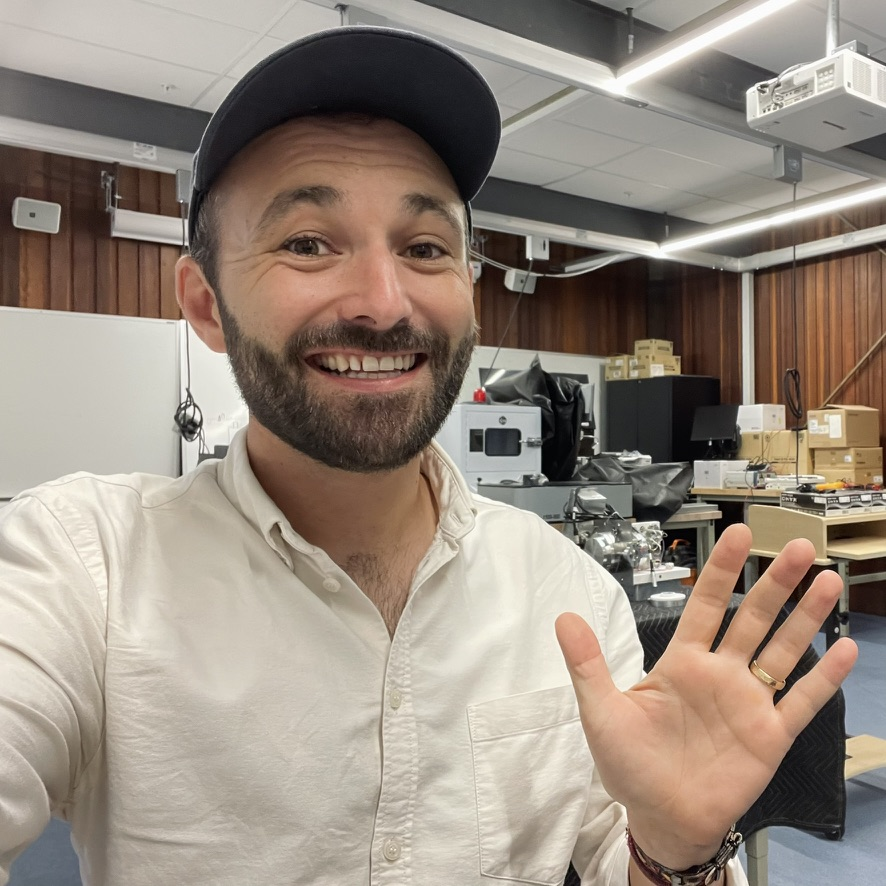
Riley Meehan
in situ Zine Faculty Advisor, Makerspace Director
Riley is an engineer, maker, designer, and educator whose research focuses on how educational institutions design and assess makerspaces to reflect the commitments and values of school communities. His work spans education, engineering, design, and sociology, with particular emphasis on creating inclusive and accessible maker learning environments.
Alumni
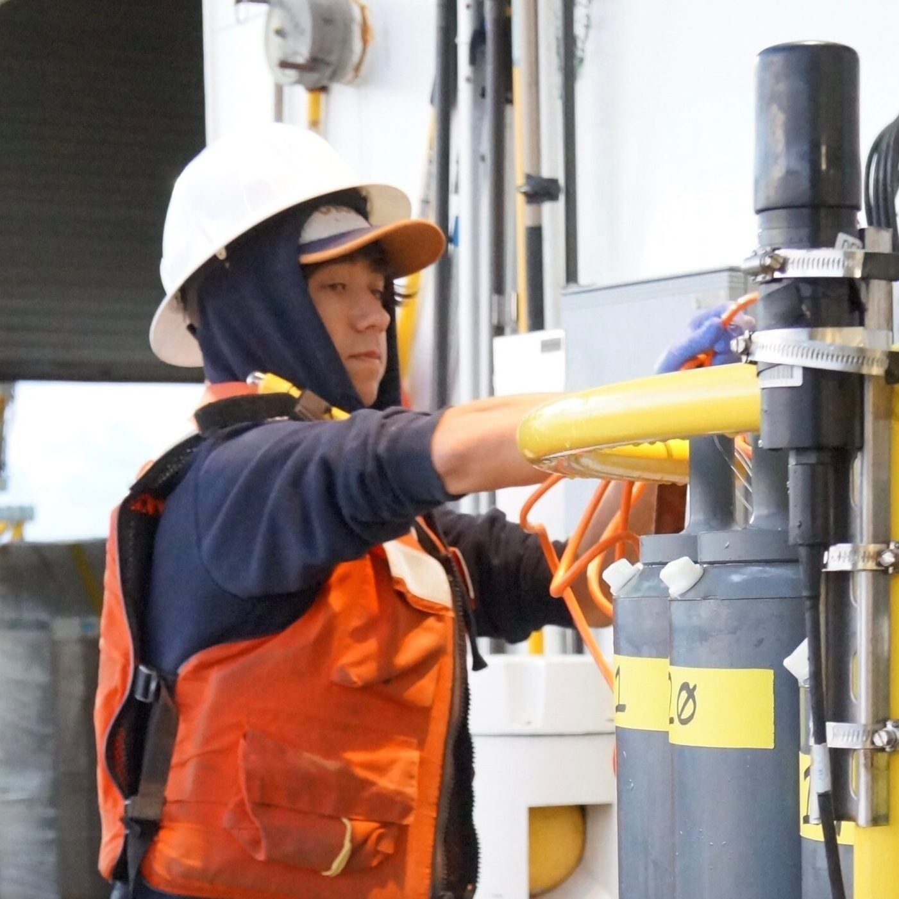
Dante Capone
Co-Editor
Studying deep-sea ecosystems and their resilience to climate change. Passionate about science communication and ocean art.
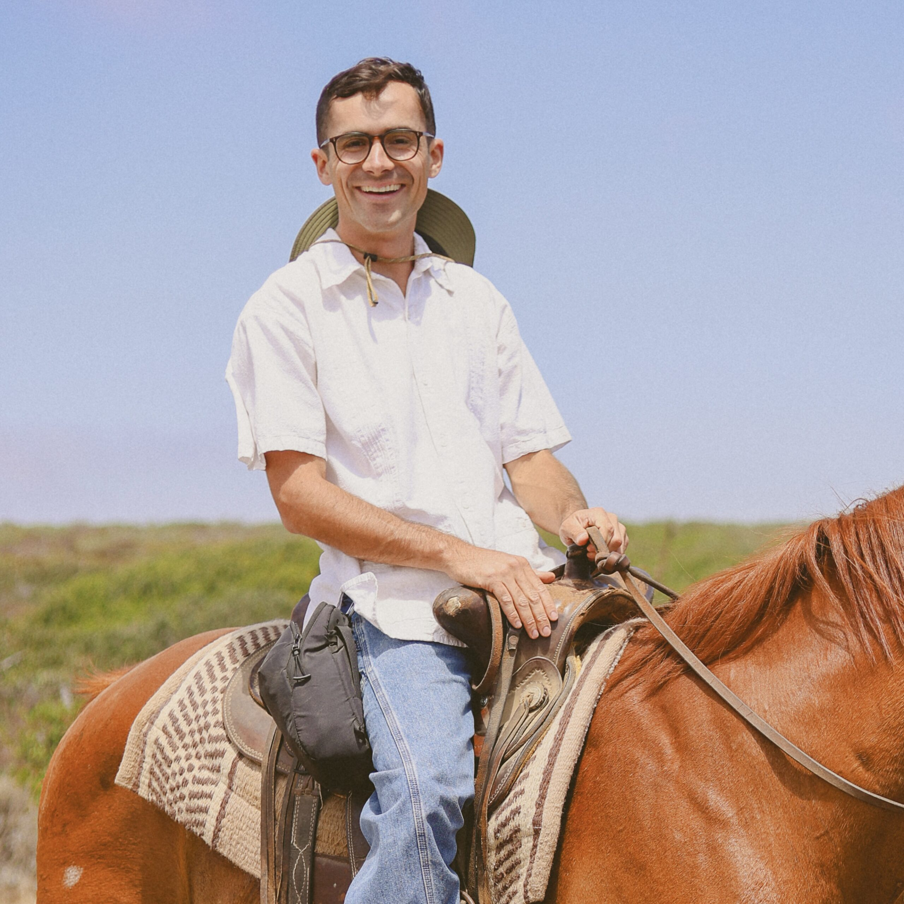
Max Titcomb
Co-Editor
Focused on marine ecology and ecosystem dynamics. Enjoys bridging science and storytelling through visual media.